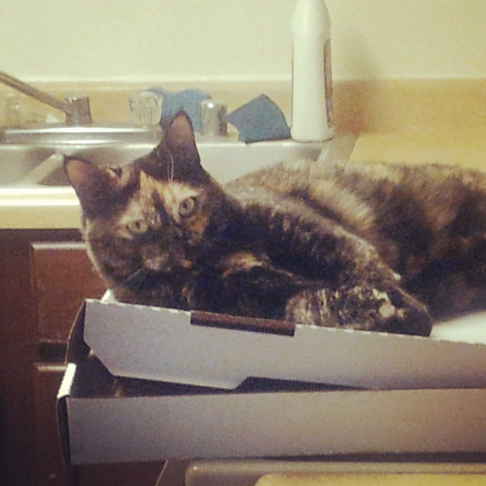
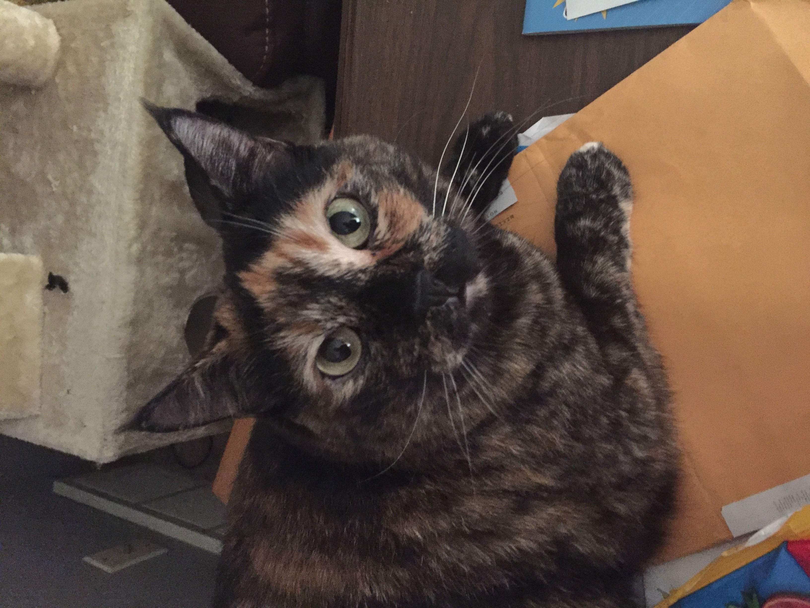
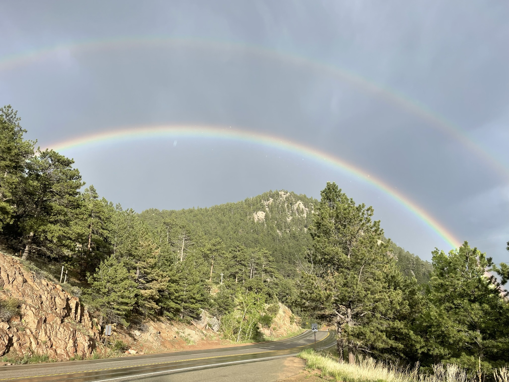

Fuega Pants: The Best Cat
Yes-- She was and remains better than your cat.
The Classic Potato

You are probably visiting this page because you enjoy cats.
Well, congratulations.
You have stumbled upon a page that showcases the very best cat, the bestest cat of all the cats that have ever catted on this planet. I don't need to see a picture or hear a story about your cat to know that Pants is and was better. I have collected some of my favorite pictures of her over the years, and I will feature them here on this website.
Please fill out the short form on the bottom to vote for your favorite picture of Pants.
Behold, the Fuega Pants Gallery!
~1~
Pants enjoyed basking in this basket.
Pants enjoyed basking in this basket.
~2~
Pants was excellent at falling asleep in odd positions.
Pants was excellent at falling asleep in odd positions.

~3~
Fuega was a fan of pizza. Here, she claims this pie for herself. She is very serious about this pie.
Fuega was a fan of pizza. Here, she claims this pie for herself. She is very serious about this pie.
~4~
Here we can see Pants enjoying pizza on another occassion in which she claimed a pie for herself.
Here we can see Pants enjoying pizza on another occassion in which she claimed a pie for herself.
~5~
This is just another example of her incredibly cute, little face.
This is just another example of her incredibly cute, little face.

~6~
Here is an example of what an upstanding citizen she was as she performs the function of keeping up on her correspondances.
Here is an example of what an upstanding citizen she was as she performs the function of keeping up on her correspondances.
~7~
Here is further evidence of her upstanding citizenship status as she completes graduate level coursework. She was less than pleased with this particular assignment.
Here is further evidence of her upstanding citizenship status as she completes graduate level coursework. She was less than pleased with this particular assignment.
~8~
In case you have already forgotten, here is a reminder of her overall cuteness.
In case you have already forgotten, here is a reminder of her overall cuteness.
~9~
While humble, here is she is showing off her very adorable fancy paw.
While humble, here is she is showing off her very adorable fancy paw.
~10~
While Pants had many toys and many specifically catnip toys, this was the only toy that kept her interest. She loved that goddamn carrot.
While Pants had many toys and many specifically catnip toys, this was the only toy that kept her interest. She loved that goddamn carrot.
~11~
It seemed important to capture Pants enjoying not just one but two carrots simultaneously.
It seemed important to capture Pants enjoying not just one but two carrots simultaneously.

~12~
This is one of my favorites because I can still feel her leaning against me and purring when I see this picture.
This is one of my favorites because I can still feel her leaning against me and purring when I see this picture.
~13~
Pants was not always a fan of the summer heat and was known to seek the coolness of the sink in her younger years.
Pants was not always a fan of the summer heat and was known to seek the coolness of the sink in her younger years.
~14~
Once again, I fear you have forgotten how adorable and cute Pants is, and so I've provided another reminder here.
Once again, I fear you have forgotten how adorable and cute Pants is, and so I've provided another reminder here.
~15~
I know I mentioned that she had a carrot toy But have I mentioned how much she loved it?
I know I mentioned that she had a carrot toy But have I mentioned how much she loved it?
~16~
Fuega's other joys included chewing on plastic straws. She was excellent at chewing on plastic straws.
Fuega's other joys included chewing on plastic straws. She was excellent at chewing on plastic straws.
~17~
I found this to be a perfect strawberry. I also find Fuega to be perfect. Therefore, a picture of utter perfection seemed necessary.
I found this to be a perfect strawberry. I also find Fuega to be perfect. Therefore, a picture of utter perfection seemed necessary.
~18~
Fuega wanted to make sure I was aware how photogenic she can be and insisted on being photographed.
Fuega wanted to make sure I was aware how photogenic she can be and insisted on being photographed.

~19~
This is Pants enjoying the sun for one of the last times.
This is Pants enjoying the sun for one of the last times.

And then it was time --- over the rainbow bridge.